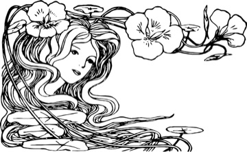

Mis publicaciones
2025
- Tanzi Neto, A., Liberali, F. C., Kluge, D. C., Nicolaides, C., & Muñoz-Salinas, Y. (2025). The affective turn in applied linguistics: Movements and intertwinings of the power of emotion in the field of language studies. The ESPecialist, 46(1), 407-411. https://doi.org/10.23925/2318-7115.2025v46i1e72001
- Muñoz-Salinas, Y., Caro-Zúñiga, D., & Jeria, I. (2025). Creativity and preservice teachers: A literature review of an underexplored field (2014-2024). Education Sciences, 15(3), 395. https://doi.org/10.3390/educsci15030395
- Díaz-Sacco, A., & Muñoz-Salinas, Y. (2025). Conditions and opportunities for teacher collaboration during the implementation of a professional development programme. Professional Development in Education, 51(8), 1890-1904. https://doi.org/10.1080/19415257.2024.2405617
- Muñoz-Salinas, Y. (2025). Understanding the connection between pre-service teachers’ emotions and identity through metaphor: A qualitative study into six candidates from a Chilean university. Pedagogy, Culture & Society, 33(1), 267-285. https://doi.org/10.1080/14681366.2023.2249463
2021
- Muñoz-Salinas, Y., & Salinas, Á. (2021). What do preservice teachers learn by reflecting upon their emotional experiences during their training? A qualitative approach into four emotions. Reflective Practice, 22(6), 844-859. https://doi.org/10.1080/14623943.2021.1973985
2018
- Muñoz-Salinas, Y. (2018). Patrones emocionales de la interacción en la práctica del yoga en contextos educacionales chilenos. Cultura y Religión, 12(2), 23-42. https://doi.org/10.61303/07184727.v12i2.829
2017
- Henríquez, R., & Muñoz-Salinas, Y. (2017). Leer y escribir históricamente: Los desafíos pendientes de la enseñanza y el aprendizaje de la historia. Diálogo Andino, (53), 7-21. https://doi.org/10.4067/S0719-26812017000200007
2013
- Muñoz-Salinas, Y., & Toledo Toro, S. (2013). Los otros creyentes: Reflexiones acerca de la muta y el mercado religioso sobre una asociación esotérica en el Chile contemporáneo. Revista de Historia, 20(1), 135-148.
Software
CUA-LIBRE STUDIO (2026). Estudio local de análisis cualitativo de datos para investigación en ciencias sociales. Funciona sin conexión a la nube en macOS y Windows, con interfaz en español, inglés y portugués. Intercambia proyectos con NVivo, ATLAS.ti y MAXQDA mediante el estándar REFI-QDA, calcula acuerdo entre codificadores y lee PDF escaneados. Versión 1.12.1.
Código en github.com/ymunozs/cualibre
